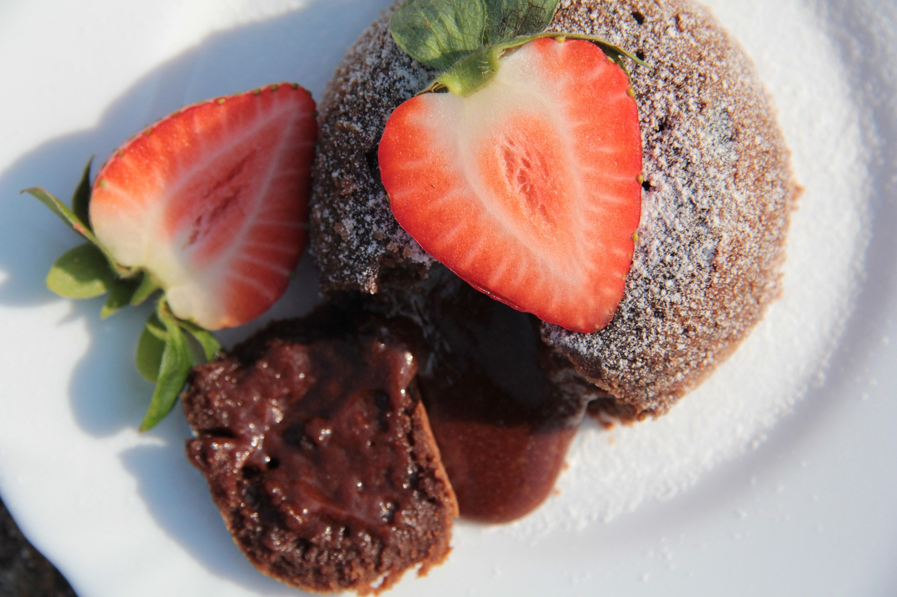

A rich and gooey chocolate dessert with a molten center. Perfect for a special treat or date night dessert.
Serves 2–3
Preheat the oven to 220°C (425°F) and butter your ramekins.
In a heatproof bowl, melt the chocolate and butter together until smooth.
Whisk eggs, yolks, and sugar until pale and fluffy. Fold in the chocolate mixture.
Gently fold in the flour and salt until just combined.
Pour batter into ramekins and bake for 10–12 minutes until edges are firm but center is soft.
Let cool 1–2 minutes, then invert onto plates and serve warm with ice cream if desired.